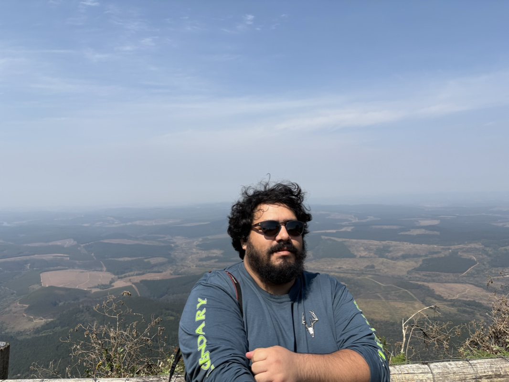
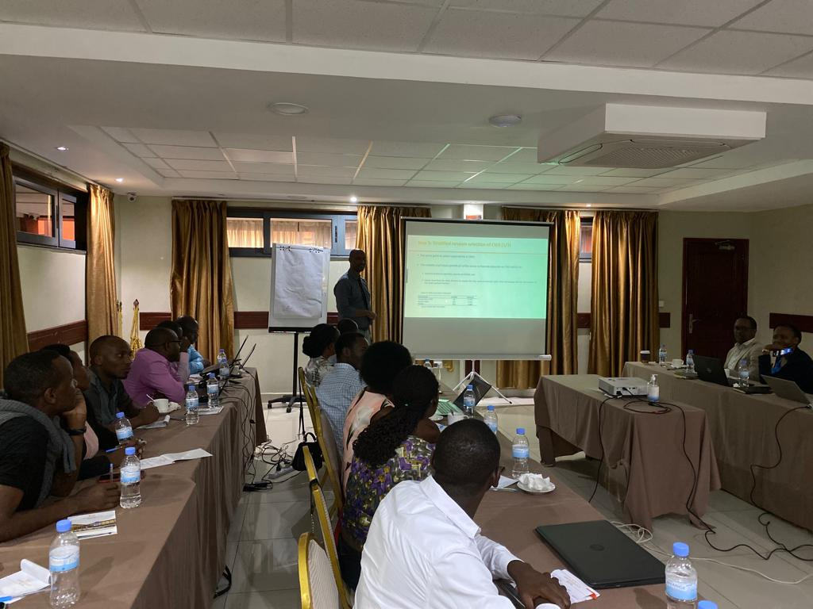
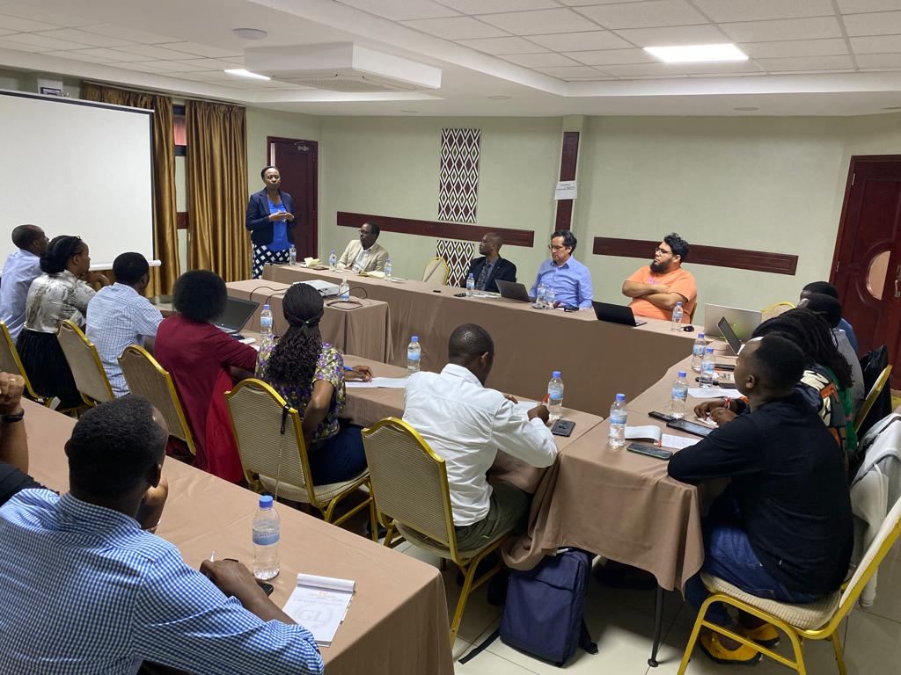
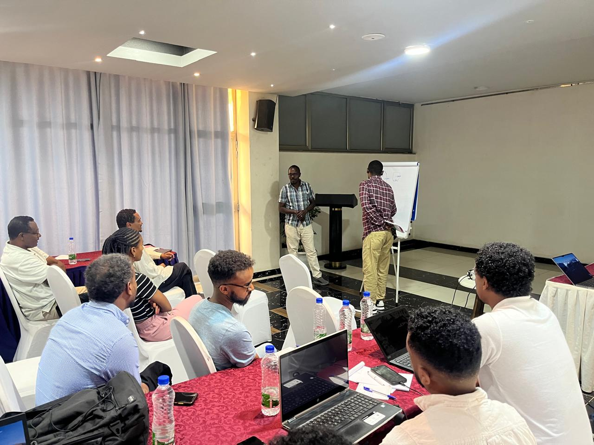
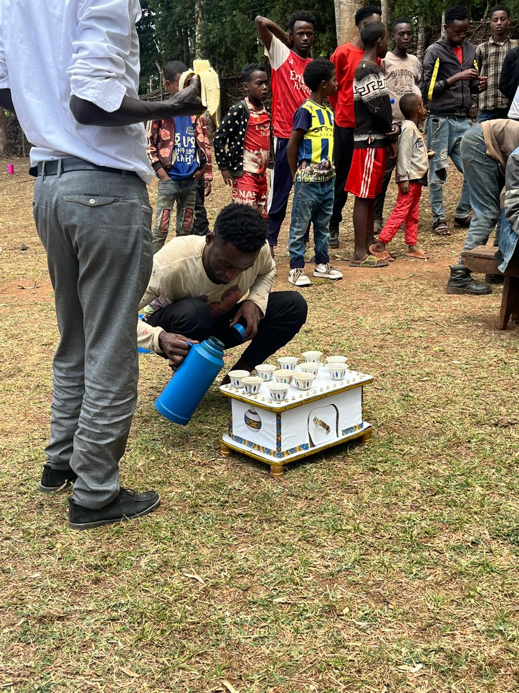
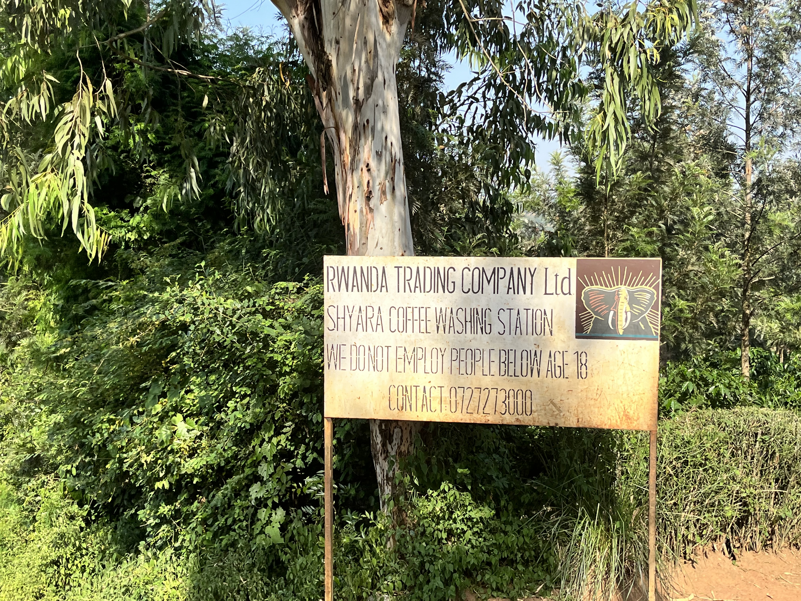
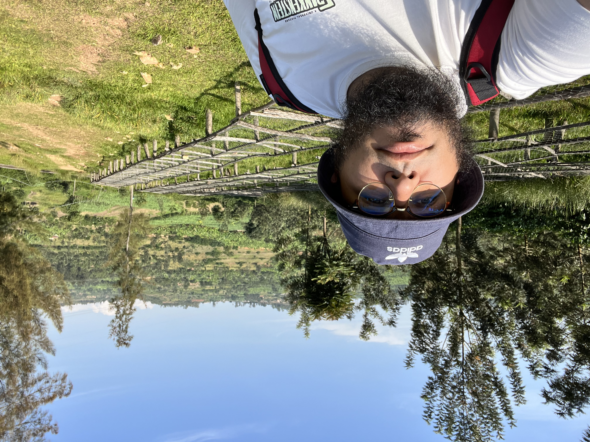

Development economist and researcher specializing in rural resilience, financial inclusion, and public policy. Lead data analyst for multi-country agricultural sustainability surveys at COSA (funded by the Bill & Melinda Gates Foundation and other donors) with fieldwork across Africa (Rwanda, Ethiopia, Burundi), Asia (India), and Latin America (Peru, Honduras, Mexico). Consulting experience with Oxfam, USAID, UNDP, and PUCP.
Focus areas: survey design and digital data collection (SurveyCTO, KoBoToolbox), enumerator training in remote and multilingual contexts, EUDR compliance surveys for coffee value chains, and applied econometrics on financial inclusion, taxation, gender, and migration.
M&E, Applied Research & Consulting
Lead data analyst for multi-country agricultural sustainability surveys using SurveyCTO and KoBoToolbox.
Co-authored the report Mujeres en tiempos de transición energética: Aproximación a los costos de salud de la exposición a metales pesados y metaloides y del trabajo de cuidados (2025) on women, energy transition, and health costs from heavy-metal exposure in Peru.
Research on public-procurement integrity using an experimental vignette design in Peruvian regional governments.
Research projects on COVID-19 impacts on migrant labor markets in Peru and Latin America; findings published in Review of Development Economics and Southern Voice reports.
Applied research on financial inclusion, gender gaps, taxation, and migration. Extensive use of ENAHO, SBS, SISFOH, and line-ministry administrative registries. Co-authored the book Reformas en los márgenes (IEP, 2023).
Developed a Composite Leading Indicator for the Peruvian economy from official statistical sources. Served as technical evaluator for INEI's competitive research program.
Applied to survey work, evaluation, and applied research
Peer-reviewed articles, books, working papers & donor reports
Survey design, enumerator training, and data collection across three continents





